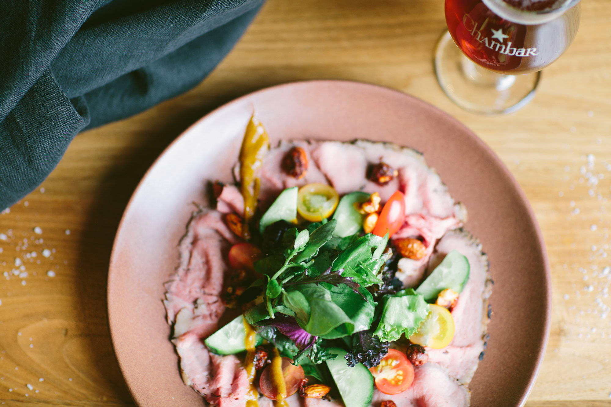
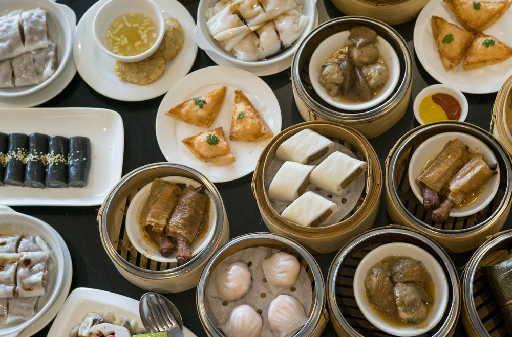
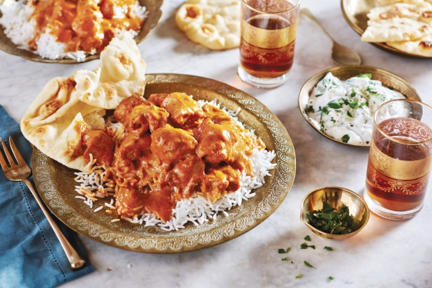
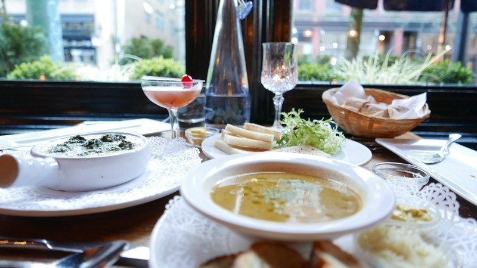
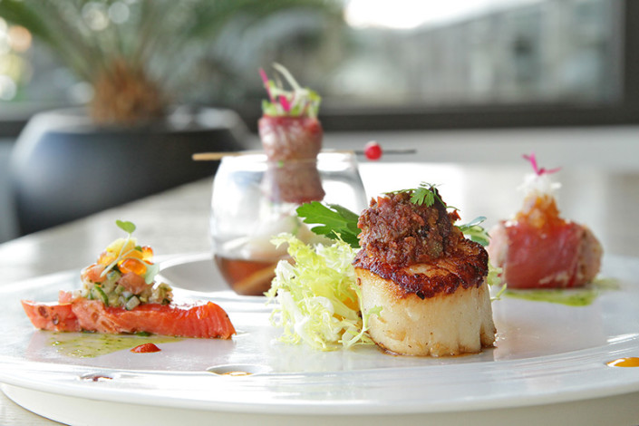

Vancouver is the home to many cultures and ethnicities. It comes as no surprise that the cuisines that have been developed here are heavily influenced by our ethnically diverse background. Bordered on the west by the Pacific Ocean, Vancouver has established a reputation for delectable seafood and exquisite fine dining.
These are some of our top restaurants in Vancouver. They are chic, modern, yet they still maintain a sense of their culture.
| Derived from Belgian cuisine, the Chambar restaurant combines the simple pleasures of dining with a tasteful dash of Belgium to render a dignified cultured experience. With symbolism throughout their food, drinks, building, and brand, they make many tributes to their multicultural ancestry. | Chambar  |
| Pink Pearl  |
With over 30% of the Vancouver population being of Chinese descent, it is no wonder Vancouver has some of the best Chinese food in Canada. Pink Pearl has come to be a favourite amongst the locals. Utilizing some of the freshest ingredients the West Coast can provide, they yield “the highest-quality Cantonese, Szechuan and Chinese seafood in Vancouver”. At the Pink Pearl restaurant, you will find more than just the traditional standards. Serving dim sum all day, every day of the week, they take their food and their service very seriously. |
| After its opening in 1994, Vij’s restaurant has come to be recognized as one of the most well-known Indian restaurants across Canada. Incorporating an exotic ambience into their flavourful cuisine captures the essence of what Vij’s menu is all about. Vij’s restaurant puts a modern twist on traditional Indian food, which is probably what brings so much praise to the establishment. | Vij's  |
| Jules Bistro  |
Located in the heart of Gastown, Jules Bistro carries an authentic French bistro experience. Following French tradition, their restaurant is a classic in our ever-changing, contemporary community. With sustainable ingredients from the Pacific and our fertile land, Jules is able to produce exemplary French trademarks including; lobster bisque, escargots bourguignonne, and duck leg confit. |
| Originally the first restaurant to introduce Aguri-Style cuisine to Vancouver, Miku has rapidly grown since their humble beginnings in 2008. Offering a vast selection of Japanese food, Miku strives to showcase the best of what Vancouver has to offer by using fresh, regional ingredients as well as sustainable seafood options. Stationed on the waterfront next to Canada Place, they are not only commended for their gourmet cuisine but their breathtaking views as well. | Miku  |